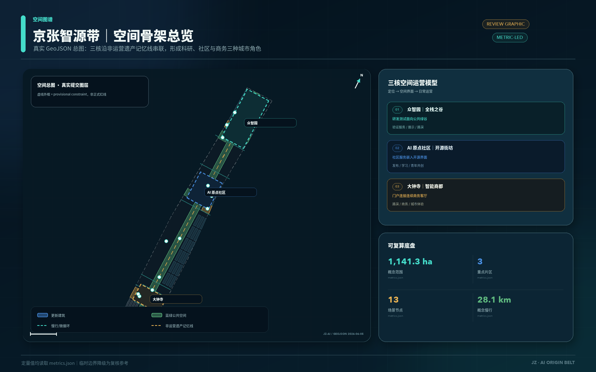
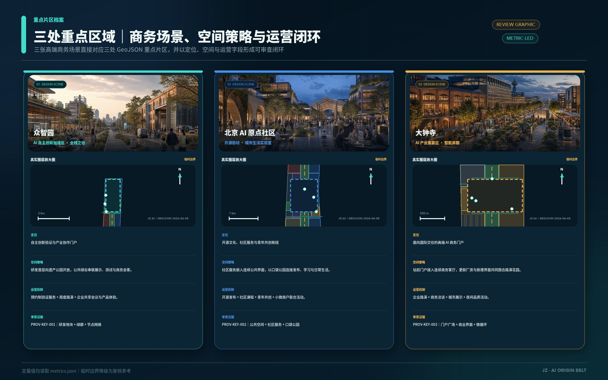
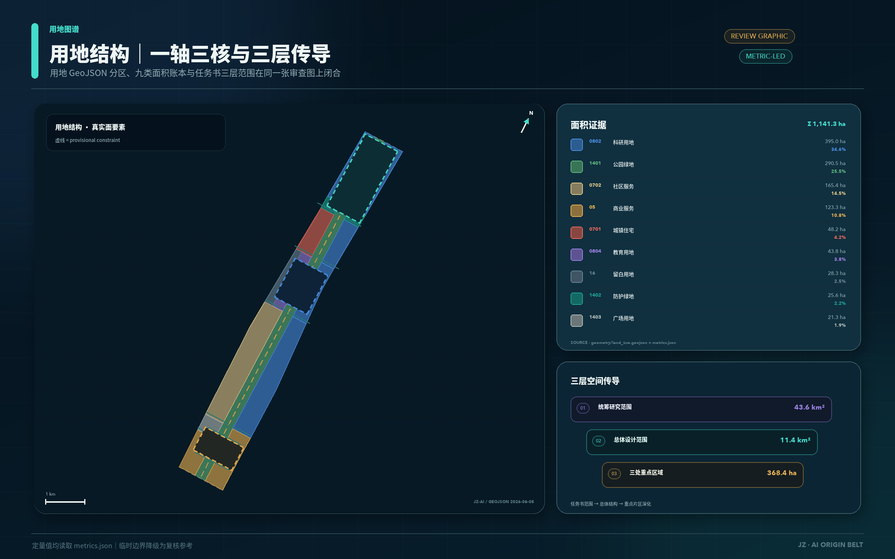
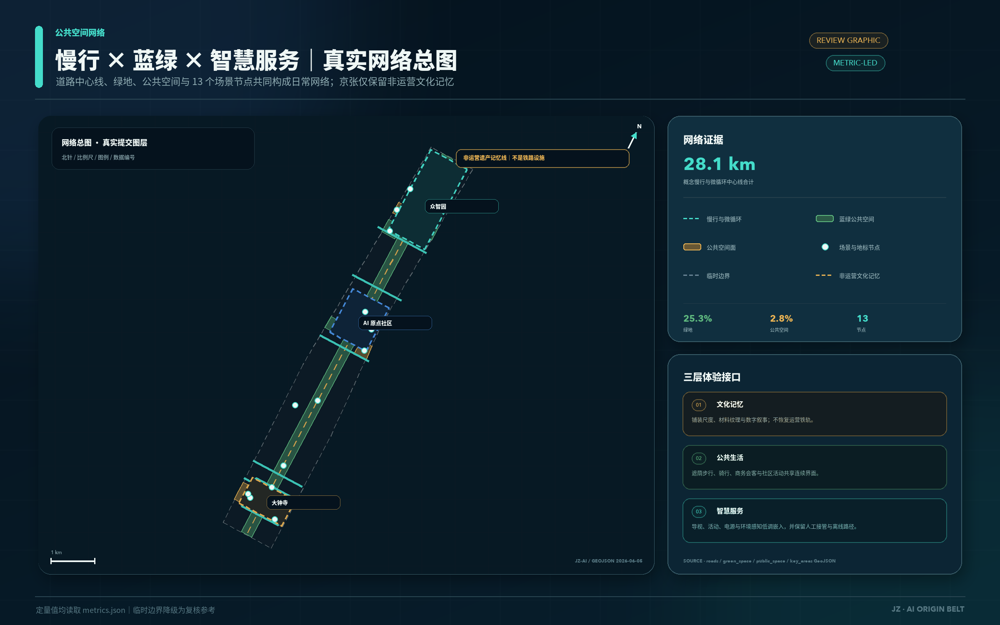
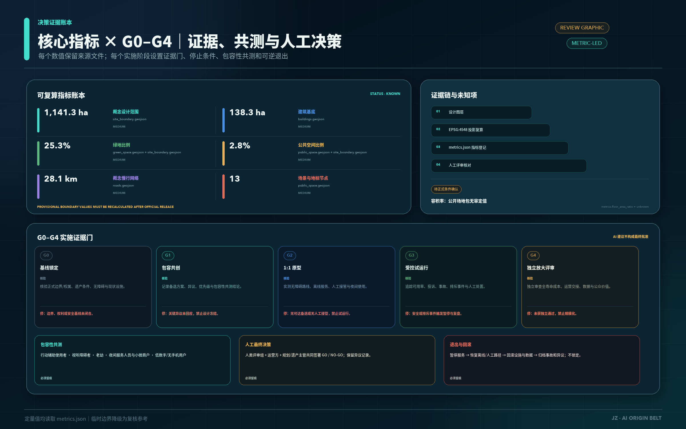

FIRST-VIEWPORT EVIDENCE
执行摘要与评审证据
一轴三核、双环多点；10+3 个有边界场景；六层 AI 全栈；G0—G4 可撤回实施门。首屏只陈述包内证据与本地门禁，官方评审属于外部状态。
SPATIAL EVIDENCE · 总平 / 空间证据
总平智轴 · 一轴三核双环多点 三核空间 · 差异化策略与共同底盘


SEVEN-DIMENSION EVIDENCE · 七维证据
任务书相关性原创性AI 与规划创新可实施性公共利益与包容风险与合规表达完整度
FOUR LOCAL GATES · 本地四门
确定性LOCAL PASS
空间LOCAL PASS
视觉LOCAL PASS
专业证据LOCAL PASS
LOCAL GATES PASS · 官方评审由仓库外部流程决定 · 概念建议 · 粗略替代边界
01 / MASTERPLAN
总览地图与三层范围
从 43.6 平方公里统筹研究，到约 11.4 平方公里总体设计，再到三处约 368.4 公顷重点区域；三个尺度分别回答生态协同、更新框架和片区落地。
总体设计范围
在粗略替代边界下组织用地、建筑、交通市政、蓝绿系统与更新项目。重点区域范围
众智园、北京 AI 原点社区、大钟寺三处粗略范围，开展片区级详细设计。一轴三核 · 双环多点
- 一轴：京张遗址公园文化智轴，承载慢行、绿意、历史解说与 AI 公共体验。
- 三核：众智园“全栈之谷”、原点社区“开源街坊”、大钟寺“智能商都”。
- 双环：慢行活力环与蓝绿生态环，缝合校园、园区、街区和公共交通门户。
- 多点：10 个 AI 场景节点与 3 个朝圣地标概念节点组成“智源之路”。
边界声明：地图采用场地包的粗略替代边界，状态为
provisional_constraint、official_boundary=false。仅供方案生成、自检、可视化与设计讨论；正式边界发布后，全部图层和面积指标必须复算。任务书精确映射
三大定位 × 五大功能 × 三区两翼
正式名称逐项进入空间、场景和验收，不把功能框架留在口号层。
百年京张文化带
以工程伦理、可解释治理和贡献记忆响应“AI 治理全球话语权”；由 AI 原点社区与非运营遗址文化智轴承载。
都市 AI 生活体验带
响应“AI+ 场景赋能新范式”“智能化 AI 活力城市”；由大钟寺 AI 产业集聚区与小月河场景赋能翼承载。
AI 融合创新带
响应“AI 全栈自主创新体系”“世界级 AI 创新生态”；由众智园 AI 自主创新加速区与中关村科技服务翼承载。
五大功能闭环：AI 全栈自主创新体系 → 世界级 AI 创新生态 → AI+ 场景赋能新范式 → 智能化 AI 活力城市 → AI 治理全球话语权。三区两翼分别是 AI 原点社区、众智园 AI 自主创新加速区、大钟寺 AI 产业集聚区、中关村科技服务翼和小月河场景赋能翼；“两翼”是协同角色，不冒充法定边界。
02 / MEASURABLE
核心指标
下列指标来自提交包 GeoJSON，并以 EPSG:4548 复算。容积率、建筑高度、道路红线和运营绩效未获得正式前置条件，明确保持 unknown / pending。
11,412,825 ㎡
总体范围面积 · 粗略替代边界
geometry/site_boundary.geojson
1,383,040 ㎡
建筑基底 · 概念布局
geometry/buildings.geojson
25.3%
绿地比例 · 粗略边界下复算
geometry/green_space.geojson
2.8%
公共空间比例 · 面要素统计
geometry/public_space.geojson
28.1 km
概念慢行与微循环网络
geometry/roads.geojson
10 + 3
AI 场景 + 朝圣地标概念节点
geometry/public_space.geojson
3
重点详细设计区
geometry/key_areas.geojson
16 / 42 / 9
用地区块 / 建筑组团 / 慢行廊道
land_use · buildings · roads
03 / EXPERIENCE
三处高端商务科技场景
同一套“高端、可变、低侵入”设施语言贯穿三核：深色阳极氧化铝、暖木、哑光石材、集成电源与柔和边缘照明；科技设备嵌入家具和景观边界，而不是依赖巨屏与炫光。

研发总部 · 原型展示
众智园 · 全栈之谷
园区运营角色组织研发洽谈、标准共创与原型展示。可拼合会议桌、人体工学座椅、透明交互展柜和端侧算力接口面向专业团队日常使用。
研发协作透明展柜设备离线模式人工接管

国际协作 · 社区共创
北京 AI 原点社区 · 开源街坊
校—园—街区联合运营角色管理开源发布、技术转移和青少年共创。电子墨水导视、纸面替代服务与可移动商务家具兼顾专业活动和日常社区使用。
开源发布电子墨水导视无手机替代青少年共创

产品发布 · 投资会客
大钟寺 · 智能商都
商业运营角色与公共文化团队共同管理发布、投资对接和夜间活动。哑光石材洽谈桌、可切换路演界面、服务机器人和边缘智能照明强化国际商务门户体验。
投资会客服务机器人智能照明快速换场
场景图状态：三幅图由生成式图像工具制作，仅解释空间氛围与使用愿景，不是现状照片、法定边界、面积指标或工程可行性证据。铁路遗产仅以铺装中的断续黄铜轨距线、嵌平枕木和解说节点提示，不设置连续钢轨、道砟、站台或运营铁路暗示。
04 / SPATIAL SYSTEMS
用地、交通慢行、蓝绿公共空间与建筑更新
解释图不是 raw data 截图：低对比表达临时边界与背景，高对比突出廊道、节点、公共空间和设计判断；权威数据仍以 GeoJSON、指标和矩阵为准。

用地分区与三层范围
16 个无缝用地区块覆盖科研、商业、居住、社区、教育、绿地、广场与战略留白。分类为概念分区，正式控规条件发布后复核。

公共交通接驳、慢行与蓝绿公共空间
遗址绿道、五条东西联络道、三条片区微循环与清河—小月河蓝绿廊道构成连续网络；遗址线不恢复运营铁路，工程线位和道路红线待正式资料。
重点区域、建筑与更新项目
42 个建筑基底组团按保留、改造、更新、新建、待确认的方法管理；不是现状测绘或具体拆改留结论。
众智园 · 全栈之谷
花园型研发街区、清河低碳创新界面、安全治理沙盒与全栈之塔展厅。粗略范围约 192.1 公顷。
原点社区 · 开源街坊
校—园—街区缝合、成果转化街、开源发布广场与人才服务。粗略范围约 104.3 公顷。
大钟寺 · 智能商都
公共交通门户、四象限步行连通、智能终端展示交易、数据要素会客厅与国际路演。粗略范围约 72.0 公顷。
更新项目清单 · 全部为概念建议
| ID | 更新项目 | 类型 | 启动前依赖 |
|---|---|---|---|
| JZ-01 | 遗址文化智轴绿道贯通 | 公共空间 / 慢行 | 廊道权属、跨环路条件 |
| JZ-02 | 大钟寺四象限步行连接与路演客厅 | 站城一体 / 运营 | 站点条件、路口、市政 |
| JZ-03 | 原点社区开源街坊与成果转化街 | 城市更新 / 产业服务 | 校区边界、权属、首层业态 |
| JZ-04 | 众智园清河创新界面与低碳廊道 | 蓝绿 / 产业展示 | 河道蓝线、生态、防洪 |
| JZ-05 | 端侧算力驿站与新基建原型 | 新基建 / 公共服务 | 能源、安全评估、运营主体 |
| JZ-06 | 小月河—清河蓝绿生态廊道 | 蓝绿空间 | 蓝线、海绵与生态条件 |
| JZ-07 | 京张 AI 贡献者大道与荣誉展示 | 公共文化 / 品牌 | 公共空间许可、版权清权 |
| JZ-08 | 全球 AI 活动周公共路线 | 运营 / 品牌 | 活动审批、安全保障 |
05 / REGIONAL INTERFACES
区域协同：从口号变成可核验接口
这里只定义合作协议模板、责任角色与证据格式，不虚构项目、机构参与或招商承诺。联合试验必须等合作主体书面确认后才能开始。
需求单
数据与知识产权边界
联合试验
第三方 / 公众复核
可复制手册
| 协同接口 | 智源带输出 | 对方可能输入 | 可核验证据 | 退出条件 |
|---|---|---|---|---|
| 北纬社区 | 无障碍审计、AI 生活服务原型 | 居民共测问题清单 | 匿名共测记录、整改闭环 | 公众反对或隐私风险未缓解 |
| 未来科学城 | 开源发布、投资与企业服务接口 | 工程验证需求、人才活动 | 双方确认的试验章程与复盘 | 无明确责任主体 |
| 怀柔科学城 | 城市场景、科学传播空间 | 科学问题、装置衍生线索 | 公开来源与知识产权边界表 | 来源或知识产权不清 |
| 北京经开区 | 城市公共场景、用户反馈 | 机器人与终端中试能力 | 安全评估、人工接管、故障日志 | 安全门槛未通过 |
| 京津冀 | 开源活动品牌、场景手册 | 跨城反馈、人才网络 | 版本化手册、复现记录、年度复核 | 结果不可复现 |
FULL STACK / agent.2
AI 全栈自主创新体系 · 六层证据链
每层同时绑定空间载体、责任角色和退出证据；下层未过门槛，上层场景不得试运行。
众智园 + 端侧驿站
技术/能源角色；验收能耗、散热、断网断电和维护日志。
隔离治理沙盒
平台/安全角色；验收版本、接口、故障注入和人工接管。
数据要素会客厅
数据/法务/评估角色；验收来源、许可、数据卡/模型卡与删除。
开源发布 + 转化街
社区/技术经理；验收任务边界、工具权限、引用、错误和人工终审。
10 场景 + 3 测试场
场景运营/用户代表；验收可用性、无障碍、投诉、事故与转化工单。
红队 + 年度公开复核
独立评估/公众/属地角色；验收隐私影响、异议和整改闭环。
权限边界：硬件不直接取得个人数据；模型不直接决定公共处置；Agent 不越过工具权限；所有公共输出由对应人员终审。
06 / AI+ SCENARIOS
10 张 AI 场景卡 + 3 个产业测试验证场景
每个场景同时说明空间位置、日常运营与治理边界。测试场景均是可撤回的概念原型，进入运营前需要审批、安全评估和隐私影响评估。
| # | 场景卡 | 空间落位 | 运营角色 / 用途 | 治理边界 |
|---|---|---|---|---|
| 01 | 开源发布厅 | 原点社区 | 发布、贡献展示、小型路演 | 案例和标识须清权 |
| 02 | AI 治理沙盒 | 众智园 | 标准、安全评测、红队展示 | 隔离环境、人工监督 |
| 03 | 端侧算力驿站 | 大钟寺及沿线节点 | 轻量新基建与体验接口 | 单独授权、能耗审计 |
| 04 | AI 慢行导视 | 遗址智轴 | 断点发现、可解释导引 | 不采集个人轨迹 |
| 05 | 国际路演客厅 | 大钟寺 | 展示、洽谈、媒体发布 | 活动审批、内容清权 |
| 06 | 清河低碳创新廊 | 众智园滨水界面 | 蓝绿空间与技术展示 | 生态和防洪优先 |
| 07 | 近校成果转化街 | 原点社区 | 孵化、法务、知识产权、投资 | 科研成果需授权 |
| 08 | 数据要素会客厅 | 大钟寺 | 合规、可审计的数据服务接口 | 最小化、留痕、人工复核 |
| 09 | AI 生活服务街 | 社区—商业界面 | 医疗、教育、法律、日常服务入口 | 不做商业画像，有人工替代 |
| 10 | 全球 AI 活动周路线 | 全带公共空间 | 可步行、可分享的公共体验 | 活动和安全审批 |
产业测试验证场景 · 三项
限定时段与路段、人工监督、随时撤回；测试安全接管、弱势行人优先和异常日志。
识别慢行断点、设施报修与活动安全提示；智能体只辅助，处置决定由人复核。
验证分布式能源与计算负荷的可解释调度；先做隔离仿真，再由专业团队评估。
五类核心画像
开源开发者、创业团队、企业与商务访客、周边居民、高校师生。场景分别对应发布协作、低成本试验、展示洽谈、低扰动生活和成果转化。
三处朝圣地标概念节点
京张铁路记忆馆、AI 原点纪念碑广场、全栈之塔展厅。与“京张 AI 贡献者大道”共同承载历史、荣誉与开源文化；不追求娱乐化网红表达。
07 / DELIVERY
实施 G0–G4 阶段门与包容性共测
项目只有在上一阶段证据归档后才能进入下一门。角色清楚但不虚构承诺：城市设计/文保、属地公共部门、园区/商业运营、技术运营、第三方与公众代表共同把关。
专业程序决定
正式边界、用地、红线、权属、市政、文保与开发强度。AI、运营方和概念图不得自动修改。
多专业综合审查
轴线、界面、公共空间、慢行、蓝绿与风貌；只向下一层发布带版本号的可试点空间和安全边界。
G0–G4 管理
AI 场景、商务家具、导视、活动与轻设备。运营证据只回写下一轮专业复核，不自动改变法定控制。
综合规划创新：真实使用、投诉、无障碍、能耗、安全与维护证据经脱敏和人工复核后进入下一轮 L2；任何涉及 L1 的调整必须重新履行法定程序，算法闭环永不直接生效。
基线
现状测绘、权属与文保核查、无障碍审计、隐私影响初筛。
停止：边界/权属冲突，或敏感数据来源不清。
共创
居民、高校、企业、访客和弱势群体的需求与异议台账，书面回应实质异议。
停止：排斥、夜扰或无障碍影响未解决。
原型
1:1 家具/导视样段、设备离线模式、安全与人工接管测试。
停止：无人工接管、运维主体或安全责任链。
试运行
在线率、换场时长、满意度、投诉与事件日志；由确认的运营主体锁定口径和底线。
停止：事故、隐私事件或连续未达底线。
扩展
第三方复核、全生命周期成本复盘、开源复制手册与专业审批路径。
停止：不可复现、成本不可持续或专业审查否定。
长期运营闭环
申请 → 评估 → 开放 → 复盘；春季开发者周、夏季场景开放日、秋季文化—AI 双年展、冬季开源贡献者年会。均为机制建议，不构成政府活动或资金承诺。
包容性共测席位 · 不让“平均用户”代替弱势群体
验证连续净宽、坡度、转弯空间和家具旁停留位。
验证触觉、语音、高对比与非颜色唯一编码的多通道导视。
验证照明、休息间距、边缘防护和陪护视线。
验证夜间安全、后勤动线、噪声与经营影响。
验证所有服务均有现场人工和纸面替代。
公布参与结构、未解决异议、整改前后证据与退出决定；不采集生物特征或个人轨迹，不只公布平均满意度。
08 / OPEN CO-CREATION & RIGHTS
共创宪章、持续协作与权利边界
任务书要求不是一次性交付标签，而是每轮迭代的公开验收合同。具体映射见 compliance_matrix.json 与版权台账。
charter.1–5
公共利益优先 · 仅用公开或清权资料 · 概念建议不越法定审批 · AI 原生创新 · 结构化且人机可读。
charter.6–10
披露生成方式与限制 · 人类和专业团队最终判断 · 沉淀公共知识 · 保存贡献者与版本 · 人的尊严、福祉和能力增强。
持续参与闭环
同步 main/输入 → 复读资料、Issue/PR 与按需同类方案 → 更新来源/假设/证据 → 重渲染、finalize、四门自检 → preflight 与完整回读 → 再提交。
权利摘要：三张 OpenAI 概念场景的底层模型未披露，登记为 unknown；原创 Logo 未作商标检索；六案例仅作相邻事实引用，不复制第三方图像或标识。PDF 构建工具、字体名称、嵌入状态、许可与阅读器兼容边界逐项登记；不嵌入许可未核验的字体程序。外部发布、账号操作或第三方沟通须取得相应人类授权。
09 / EVIDENCE INDEX
agent.1–agent.6 任务覆盖与证据索引
矩阵是可定位证据的索引，不用“已覆盖”代替设计内容。公告 1.3 / 1.4 / 1.5 及六项智能体任务的完整映射以 compliance_matrix.json 为准。
| 任务 | 可见设计回答 | 结构化 / 图件证据 | 状态 |
|---|---|---|---|
| agent.1 总体概念与统筹 | 名称、英文名、原创 Logo、一轴三核双环多点、三层范围、五类区域接口 | assets/brand/jz-ai-origin-mark.svg assets/figures/site-overview.png compliance_matrix.json | 可定位 |
| agent.2 生态与案例 | 六个全球案例、要素—空间—运营机制、研发—转化—商业链条 | proposal.md#统筹研究范围产业与未来城市研究 assets/figures/land-use-structure.png | 可定位 |
| agent.3 画像与 AI+ 场景 | 五类画像、10 张场景卡、3 个产业测试验证场景及治理边界 | geometry/public_space.geojson geometry/roads.geojson metrics.json#scenario_node_count | 可定位 |
| agent.4 公共空间与地标 | 三处地标概念节点、贡献者大道、智慧座椅/导视/展亭组件库 | geometry/public_space.geojson#NODE-11 assets/figures/key-areas.png | 可定位 |
| agent.5 文化叙事 | 百年京张、中关村创业开放、开源智能三层文化；轨距线仅为遗产提示 | proposal.md#蓝绿网络公共空间与城市风貌 assets/brand/jz-ai-origin-mark.svg | 可定位 |
| agent.6 活动与长期运营 | 年度活动体系、开发者社区、场景开放闭环、G0–G4 与包容性共测 | proposal.md#更新项目实施政策与分期 geometry/phasing.geojson | 可定位 |
| 公告 1.3 / 1.4 / 1.5 | 统筹研究、总体设计与重点区域详细设计全部建立章节—图层—指标—图纸—HTML 映射 | compliance_matrix.json standard_matrix.json design_depth_matrix.json | 可定位 |
10 / AUDITABILITY
自检状态、来源、假设与状态边界
自检证明包内一致性，不等于官方接受、专业审批或建设承诺。任何文件更新后均应重新运行并回读自检结果。
确定性校验
PASS空间审查
PASS可视化包装
PASS专业证据
PASS共创宪章十项
charter.1–10：公共利益 · 公开/清权资料 · 概念建议边界 · AI 原生 · 结构化与可读 · 生成披露 · 人类终审 · 公共知识 · 贡献记忆 · 人本治理。
持续参与闭环
同步 main 与必需输入 → 复读任务书/资料/Issue/PR 与按需选择的同类方案 → 更新来源、假设与证据 → 重渲染、finalize、四门自检 → participant preflight 与完整回读 → 再提交。外部发布、账号操作与第三方沟通须有人类授权。
来源
- brief/site-package/design_brief.json 与 agent_taskbook.json
- geometry/provisional_boundaries.geojson · 粗略替代边界
- data/source_registry.json · 来源用途边界
- sources.json、metrics.json、compliance_matrix.json
- 三张概念场景由 OpenAI 图像生成工具制作，底层模型未披露，登记为 unknown；原创 Logo 未作商标检索。
- PDF 构建工具、字体名称、嵌入状态、许可证、再分发与阅读器兼容边界逐项见版权声明；不嵌入许可未核验的字体程序。
关键假设
- A-BOUNDARY-001：边界为 provisional；官方发布后整体复算。
- A-CONTROLS-001：控规、红线、权属、市政与文保条件待补。
- A-SCENARIOS-001：场景、项目、活动和运营均为概念建议。
- A-DATA-001：只使用公开或已清权资料；生成媒体仅作解释。

指标与证据链
图件解释指标如何从结构化文件复算；最终判断须回到 GeoJSON、JSON 与当前自检结果。
状态边界：本方案不声称官方批准、审定控规、最终土地权属、最终建设规模、机构参与、投资确定或实施保证。所有空间、场景、地标、活动、区域协同与运营建议均为概念建议、参考方案或可供专业团队深化研究的材料；容积率、建筑高度、道路红线与绩效目标保持待定。